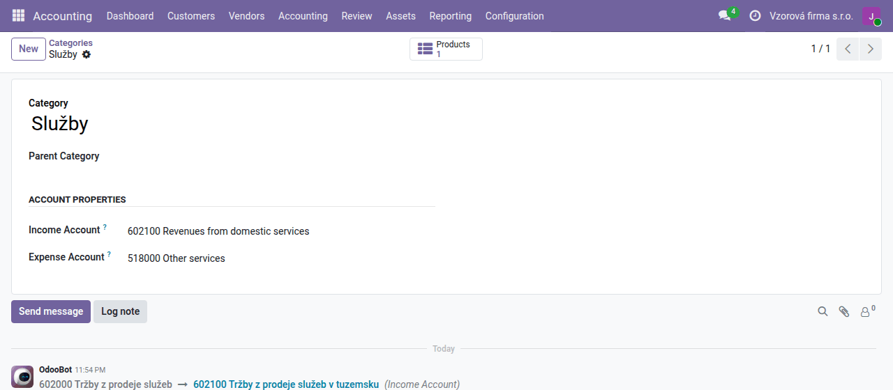
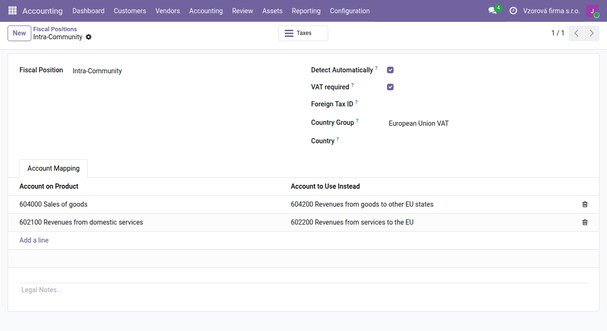
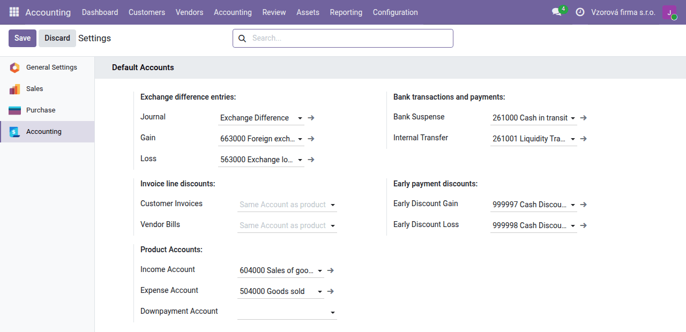

Task guide
Setting up account assignment
Where Odoo takes the account for every line of a document, and how to set up product categories, products, fiscal positions, taxes, partners and default accounts so that invoices are posted correctly without anyone touching them.
| Country | Czech Republic |
|---|---|
| Edition | Odoo Community |
| Covers | account, product, l10n_cz, l10n_cz_vat_return, sale_order_advance_invoice, l10n_cz_sale_order_advance_invoice, purchase_order_advance_invoice, l10n_cz_purchase_order_advance_invoice, l10n_cz_account_cutoff |
What this guide is for
In Odoo nobody assigns accounts to an invoice by hand (the předkontace of Czech practice): every line gets its account from rules set once — on the product, the product category, the tax, the partner and the company settings. Set up well, whoever issues invoices never sees an account and the accountant re-posts nothing. Set up badly, everything lands on the default accounts.
The guide is for the Accountant role and belongs at the start, before the first invoice. How the individual documents are posted is shown in Daily bookkeeping.
Where the account comes from
| Line of the document | Odoo takes the first one that is set |
|---|---|
| Invoice line with a product | Income Account / Expense Account on the product → on its category (or a parent category) → Product Accounts in the company settings |
| Invoice line without a product | the account used most often with this partner on this kind of document → the journal's Default Account |
| Receivable, payable | the partner's Account Receivable / Account Payable |
| VAT | the account on the tax (its distribution lines) |
| Payment, bank statement | the bank journal's accounts and the company settings |
After that, the document's fiscal position can still swap taxes and accounts (Account Mapping).
What is set after installation
Odoo's Czech chart of accounts sets 604000 Sales of goods and 504000 Goods sold for every product and every category — in Accounting → Configuration → Settings, block Default Accounts, line Product Accounts, and on every existing product category as well. The sales journal's Default Account is 604000, the purchase journal's 504000.
Without further setup, revenue from services therefore goes to 604 instead of 602, and purchased services, energy or material to 504 instead of 518, 502 or 501.
Product categories
The category is what a Czech accountant knows as the předkontace: the kind of supply decides the account. Accounting → Configuration → Invoicing → Product Categories, on each category the Income Account and Expense Account fields.
An example split (for inventory accounted by method B):
| Category | Income Account | Expense Account |
|---|---|---|
| Goods | 604000 Sales of goods | 504000 Goods sold |
| Own products | 601000 Revenue from own products | — |
| Services | 602100 Revenues from domestic services | 518000 Other services |
| Material | — | 501000 Material consumption |
| Energy | — | 502000 Energy consumption |
| Repairs and maintenance | — | 511000 Repairs and maintenance |
| Travel | — | 512000 Travel |
| Representation | — | 513000 Representation costs |

For services use 602100, not the general 602000: the fiscal positions move revenue to the EU and export sub-accounts from 602100 only (Fiscal positions).
Refine the accounts with sub-accounts from your own chart (518100 Rent, 518200 Telephones…) and categories for them. Categories can have sub-categories; a sub-category without an account inherits its parent's.
Under method A, purchased goods and material are posted to 132 / 112 and reach
expenses when issued from stock. That is set up by the module
l10n_cz_stock_account_method_a, shipped separately. Fixed assets are posted
to 042 through the asset profile — a separate guide will cover them.
Products
On a product (Accounting → Customers → Products or Vendors → Products) the account comes from its Product Category; the Accounting tab lets one product use a different Income Account or Expense Account. Keep exceptions on the product for real exceptions — the rule belongs on the category, or the assignment falls apart into hundreds of products.
For recurring costs without stock — rent, electricity, telephone, the accountant's fee — it pays to create a product of type Service in the right category. On the bill you pick the product, and the account and tax are right straight away.
A line without a product gets the account used most often with the same partner. That helps with a vendor who always invoices the same thing, but the first bill of a new vendor falls to the purchase journal's Default Account (504000). You can change that account in Accounting → Configuration → Accounting → Journals to whichever is most common for you.
Fiscal positions
A fiscal position is the tax regime of trading with a partner. A product carries its taxes and accounts as they apply at home; the fiscal position swaps them on a particular document according to whom you trade with. A customer in another EU country with a VAT number is thus invoiced an exempt supply instead of 21 %, and VAT on a bill from an EU supplier is self-assessed — all from one product with one set of taxes, without whoever issues the invoice having to pick the right tax every time.
How it is applied:
- The document has a Fiscal Position field (tab Other Info). It is filled from the partner when you choose the partner on the document; on a draft you can change it and the taxes on the lines are recomputed.
- The partner either has it set by hand — the Fiscal Position field on the Sales & Purchase tab — or Odoo finds it: a position with Detect Automatically ticked applies to partners from the country or Country Group in its settings, optionally only to those with a VAT number (VAT required). The first that matches, in the order of the list, is used.
- The position swaps taxes (each of its taxes says which taxes it replaces) and optionally accounts (Account Mapping).

The Czech chart has four positions, all detected automatically (Accounting → Configuration → Accounting → Fiscal Positions). Their names are in English in every language:
| Fiscal position | For a partner | What it swaps |
|---|---|---|
| Domestic partners | from the Czech Republic | nothing — taxes and accounts stay domestic |
| Intra-Community | from the EU with a VAT number | sales: 0% EU G (supply of goods, row 20) or 0% EU S (service, row 21), both for the souhrnné hlášení; purchases: 21% EU G (acquisition of goods) or 21% EU S (service received), self-assessed; accounts 604000 → 604200 and 602100 → 602200 |
| Private trade with the EU | from the EU without a VAT number | nothing — sold with Czech VAT |
| Extra-Community | from anywhere else | purchases: 21% EX G (import of goods) or 21% EX S (service received), self-assessed; accounts 604100 → 604300 and 602100 → 602300. Sales taxes are not swapped — see below |
A partner without a country gets no position at all, and the document carries the product's taxes unchanged — so always fill in the partner's country.
Three things to check on the Extra-Community position before the first document outside the EU:
- Exports keep Czech VAT. The position does not replace the domestic sales taxes, so an invoice to a customer outside the EU is drafted with 21 %. Change the tax on the lines to 0% EX G (export of goods, row 22) or 0% EX S (service) yourself, or — once — open those two taxes (Configuration → Accounting → Taxes) and name the domestic taxes they replace, as 0% EU G and 0% EU S do.
- Imported goods get two taxes. A bill for goods from outside the EU is drafted with both 21% EX G (VAT self-assessed on rows 7 and 43) and 0% EX G.Custom (VAT assessed by the customs office, row 42). Only one applies to a given import: remove the other from the line.
- Export revenue of goods is not moved. The account mapping starts from 604100, while goods are sold on 604000. Add a line 604000 → 604300 to the position's Account Mapping, as Intra-Community has for 604200.
Domestic reverse charge (režim přenesení daňové povinnosti, § 92a) is not
handled by a fiscal position: it depends not on the partner but on the kind
of supply — construction work, scrap, selected goods and others. Give such
products the reverse-charge taxes directly: Sales Taxes 0% RC (row 25),
Purchase Taxes 21% RC or 12% RC (rows 10 and 11). If you trade with a
partner only under this regime, a construction subcontractor for example, you
can create a fiscal position of your own without Detect Automatically that
swaps the domestic taxes for the reverse-charge ones, and assign it to that
partner by hand. For the phrase „daň odvede zákazník“ on the invoice and the
kód předmětu plnění in the kontrolní hlášení see
l10n_cz_invoice and
l10n_cz_kh.
Taxes on the product
Taxes do not belong on the category but on the product: the Sales Taxes and Purchase Taxes fields on the General Information tab. The Czech taxes come in two variants for each rate — G for goods and S for services — and the difference only shows when trading abroad:
| Tax | For | Domestic | With a customer or vendor from the EU |
|---|---|---|---|
| 21% G (sales) | goods | stays | 0% EU G — supply of goods to the EU |
| 21% S (sales) | services | stays | 0% EU S — service to the EU |
| 21% G (purchases) | goods | stays | 21% EU G — acquisition of goods from the EU |
| 21% S (purchases) | services | stays | 21% EU S — service received from the EU |
The same holds for the 12 % rate. The swap is done by the fiscal position, which a partner gets automatically from its country and VAT number.
A new product gets its taxes from the Default Taxes line in the settings (21% G for sales and purchases), so the goods variant even for a service. For services change them to 21% S, or a service from the EU is reported as an acquisition of goods, and a service to the EU as a supply of goods in the souhrnné hlášení.
For a bill for a long-term asset, pick the Majetek twin of the purchase
tax on the line (21% G Majetek, 21% EU G Majetek…): it is the same tax
and also reports the base on row 47 of the VAT return
(l10n_cz_vat_return).
The VAT accounts sit on the tax and need no changing:
| Account | Tax |
|---|---|
| 343221 VAT basic rate output | output VAT 21 % |
| 343212 VAT reduced rate output | output VAT 12 % |
| 343121 VAT basic rate input | input VAT 21 % |
| 343112 VAT reduced rate input | input VAT 12 % |
With a reverse charge, an acquisition from the EU and a self-assessed import, the VAT is posted to both: the input account on the debit side and the output account on the credit side.
Partners: receivables and payables
On the partner, tab Invoicing, the Account Receivable (by default 311000 Customers) and Account Payable (321000 Suppliers) fields. Change them for partners whose balances you keep separately — related parties, employees, shareholders. Only an account of type Receivable or Payable can be chosen, and in the Czech chart that is 311 and 321 and a few others (315000 Other receivables). For the rest, create a sub-account of that type in the chart of accounts, for example 311100 Receivables – related parties.
The company's default accounts
Accounting → Configuration → Settings, block Default Accounts:
| Setting | Default | For |
|---|---|---|
| Exchange difference entries: Gain / Loss | 663000 / 563000 | realised exchange differences on payment |
| Bank transactions and payments: Bank Suspense | 261000 Cash in transit | a statement line not yet matched |
| Internal Transfer | 261001 Liquidity Transfer | transfers between your own bank accounts |
| Early payment discounts | 999997 / 999998 | cash discounts from payment terms — do not use them, see below |
| Product Accounts | 604000 / 504000 | the last resort when neither the product nor its category has an account |

A cash discount (skonto) granted after the taxable supply changes the tax base, and the VAT Act asks for an opravný daňový doklad for that (§ 42 and § 45). Odoo's payment terms do offer an Early Discount, but it posts the discount at payment and reduces the VAT with no document at all; the two accounts 999997 and 999998 that Odoo creates for it are not part of the Czech chart. Leave it off on the payment terms; when a customer pays early with the discount, issue a credit note for the discount amount (Daily bookkeeping).
Payments registered by hand (the Pay button) go through 221002 Outstanding Receipts and 221003 Outstanding Payments until a bank statement matches them. The bank journal has Default Account 221001 and Suspense Account 261000; for every new bank account, check that it has a 221 sub-account of its own.
The localization sets further accounts itself when it is installed; this is where to find them in the settings:
| Where in Settings | Accounts | Set by |
|---|---|---|
| Sales, block Invoicing | 324001 advance clearing, 324000 short-term, 475000 long-term advances received | l10n_cz_sale_order_advance_invoice |
| Accounting, block Received Advance Invoices | 314001 clearing, 314000 advances granted | l10n_cz_purchase_order_advance_invoice |
| Accounting, block Cut-offs | 381000, 383000, 384000, 385000 | l10n_cz_account_cutoff |
In English, Odoo's Czech chart names 381000 and 383000 both Accrued expenses and 384000 and 385000 both Deferred income; go by the code (381 náklady, 383 výdaje, 384 výnosy, 385 příjmy příštích období).
Checking the assignment
- Before confirming an invoice, open the Journal Items tab: in draft it shows exactly the lines that will be posted.
- After the first month, open Accounting → Review → Control → Journal Items, group by Account and then Product. A service on 604000 or an energy bill on 504000 stands out at a glance.
- Reset a wrongly posted invoice in an open period with Reset to Draft, correct the product or account, and confirm again. Correct the category or product as well, so the mistake does not repeat.